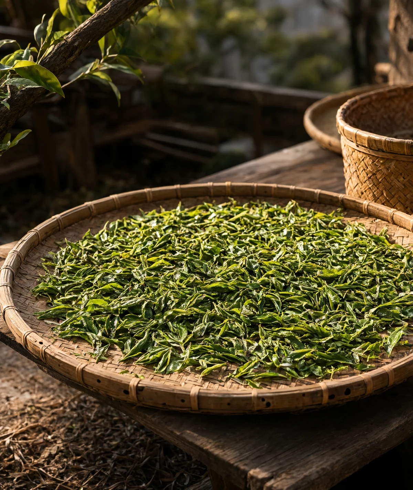
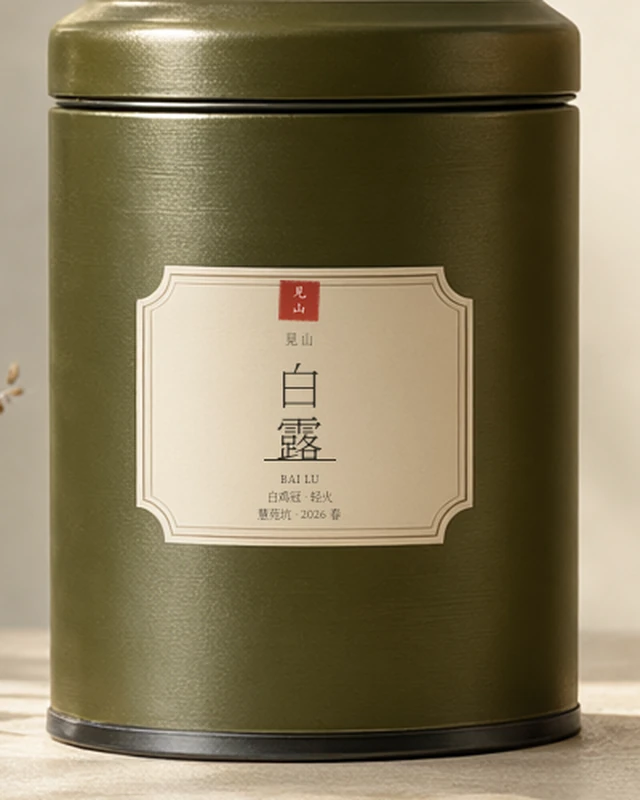
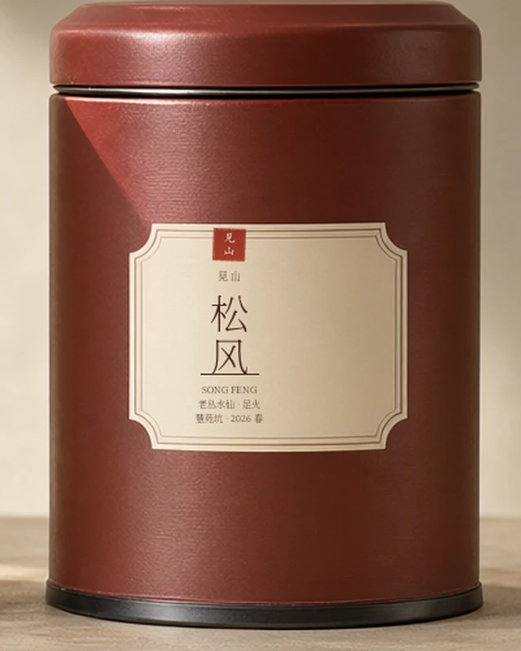

Wuyi Rock Tea慧苑坑 · 2016—
把一座山
收进一泡茶里
A mountain, steeped.
01 立场 / Position
我们不追香，
只等火退。
岩茶的好，不在第一口。足火焙过的茶，要静置四十五天，让火气退尽，品种的香、山场的骨才会慢慢显出来。
这件事急不得。我们等了十年。
- 慧苑坑老茶园
- 03亩
- 只做春茶
- 01季
- 年产量
- 600斤
- 足火退火期
- 45天
02 山场 / Origin
一条窄谷，
三亩茶。
慧苑坑在武夷山正岩核心，是一条东西向的窄谷。两侧丹霞岩壁挡住午后烈日，谷底常年有雾，砾壤薄，茶树长得慢，根却扎得深。这样的地方出不了高产，却出得了“岩骨”。
27°43′N · 117°41′E
海拔 280—320 M

- 山场
- 慧苑坑 · 正岩核心
- 海拔
- 280—320 m
- 土壤
- 丹霞砾壤 · pH 4.8—5.2
- 日照
- 日均 4.2 小时
- 采摘
- 谷雨前后 · 一芽三四叶
- 年产
- 六百斤 · 春茶一季
03 茶 / The teas
三款茶，
一座山。
同一片砾壤，三种品种与火功。每款 50 克，一年一采。喝完再开下一罐。
 01
01
肉桂 · 足火
桂皮 / 熟果 / 岩韵

02白鸡冠 · 轻火
毫香 / 蜜韵 / 清冽

03老丛水仙 · 足火
丛味 / 木质 / 苔藓
不确定从哪一款开始？先看一泡茶的完整步骤。
冲泡指南
04 包装 / The tin
一罐一两，
喝完再开。
铁罐避光，内衬食品级铝膜，充氮封存。每罐 50 克，约二十泡，刚好够一个人喝一个月。开罐后放在阴凉干燥处，不必洗罐——残留的茶香会替你养罐。
- 材质
- 马口铁 · 哑光
- 容量
- 50 g
- 尺寸
- φ68 × 98 mm
- 封存
- 充氮铝膜
- 标签
- 特种纸 · 专色印
- 产地
- 武夷山 · 慧苑坑
标签 / Labels
同一套字与印，落在三只罐上。每款一个批次号，喝完还能找回它的出处。
LOT 26-A · B · C
罐面标签 / 68 × 68 mm
特种纸 · 专色印刷

05 工艺 / Craft
火候，是山的
另一半。
同一批茶青，火轻一分是白露，火足一分是岩骨。做青看天，焙火看茶，最后一步只能交给时间。
-
01
采
谷雨前后，一芽三四叶。三亩茶园，五个人采三天。
-
02
萎
竹筛薄摊，日光萎凋四十分钟，翻青三次。叶面失水，叶脉还软。
-
03
摇
手工摇青六至八次，叶缘红变，兰花香起。看天、看叶、看香，不能只看钟。
-
04
焙
荔枝炭焙三道，每道间隔七天。温度先高后低，看茶定火，不追焦香。
-
05
退
足火茶静置四十五天，火气退尽才封罐。快不得，也没有捷径。
06 冲泡 / The brew
一泡茶，
两分半钟。
温器、投茶、醒茶、注水、出汤。五个动作，把山场、火功和当天的状态，落在同一只盖碗里。
进入冲泡指南- 茶量
- 8 g
- 水量
- 110 ml
- 水温
- 100 °C
- 出汤
- 8 s

07 到访 / Visit
到山上来，
喝一泡当季的茶。
茶室在慧苑坑的谷底，只有三张桌子。每天三席，每席九十分钟，只泡当季的茶。我们会先问你平时喝什么，再决定今天开哪一罐。
- 地址
- 福建省武夷山市慧苑坑 27 号（近水帘洞）
- 时席
- 10:30 / 14:00 / 16:00 · 每日三席
- 休舍
- 周二、周三